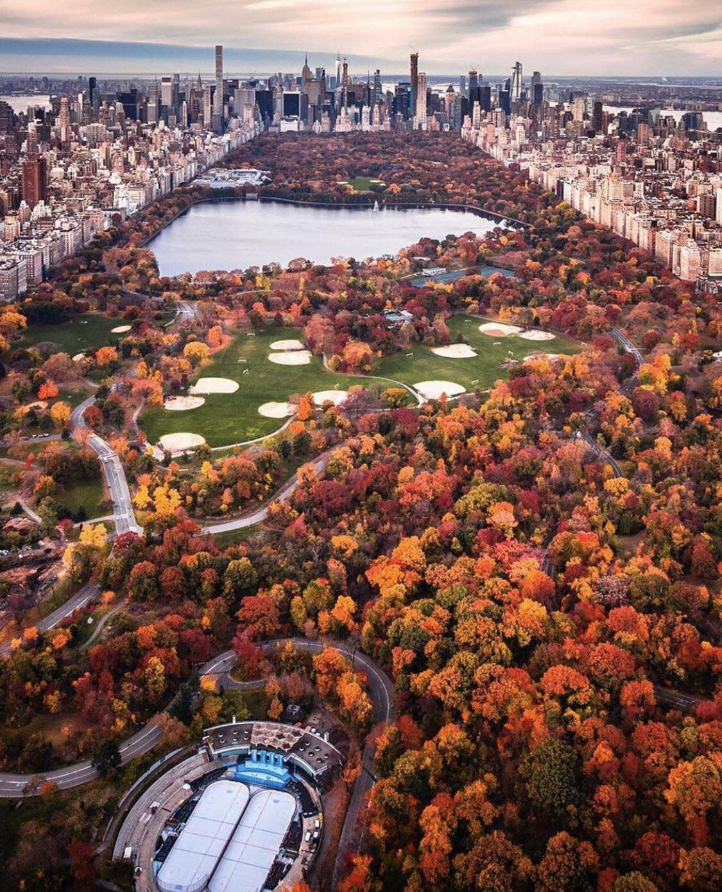

Central Park is more than just a park—it's a peaceful escape in the heart of one of the busiest cities in the world. I love it because it offers beautiful scenery in every season, from blooming flowers in spring to colorful leaves in autumn. Whether you want to walk, relax, read, take photos, or have a picnic, Central Park has the perfect spot. It's full of art, music, and nature, and no matter how many times you visit, it always feels special and new.